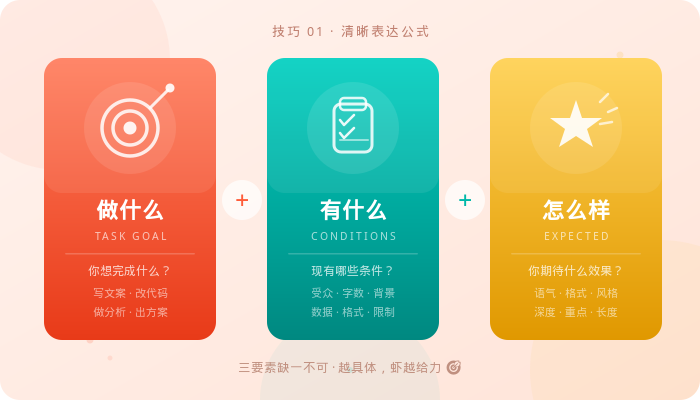
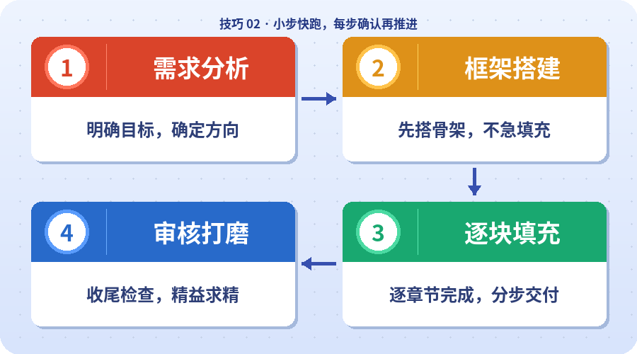
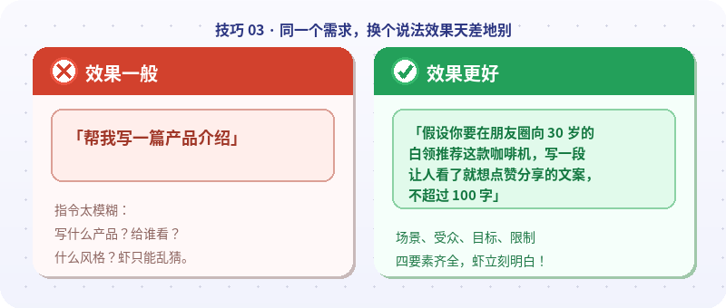
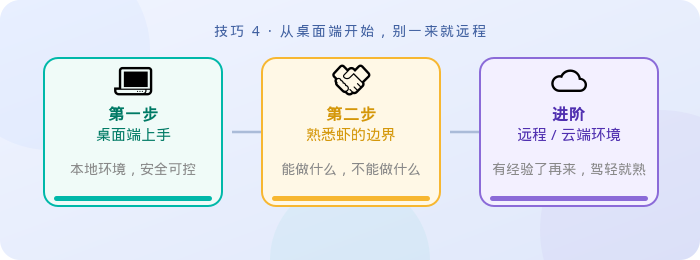
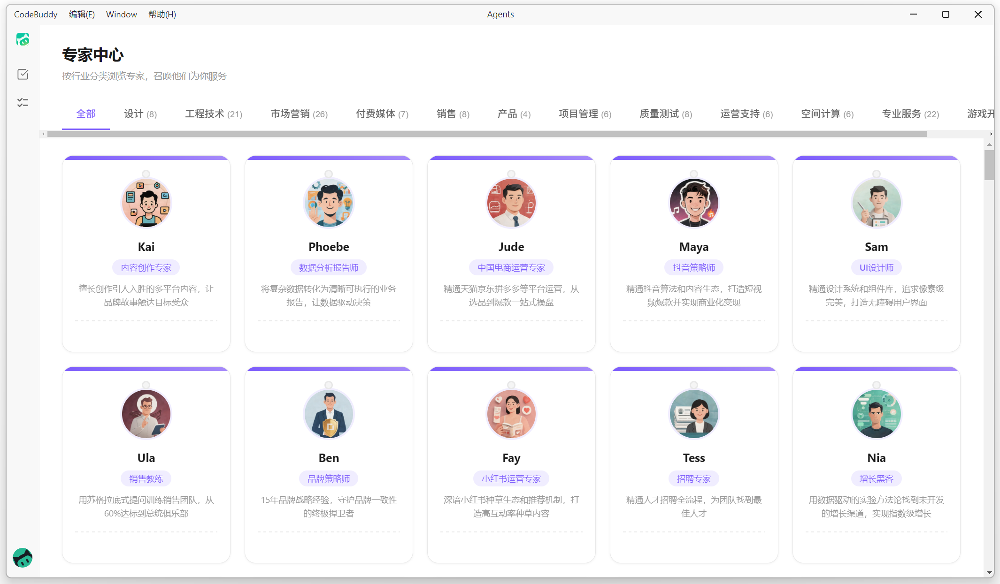
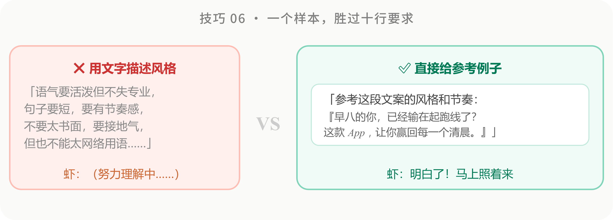
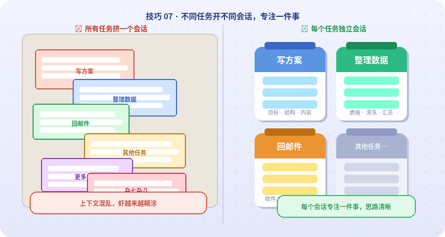
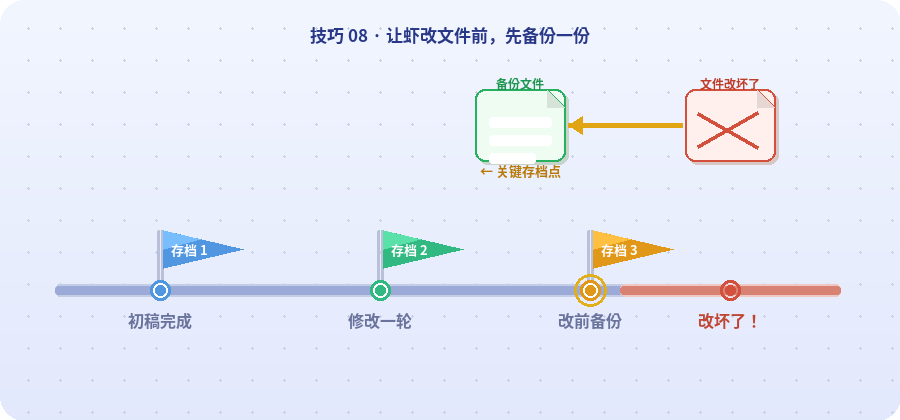
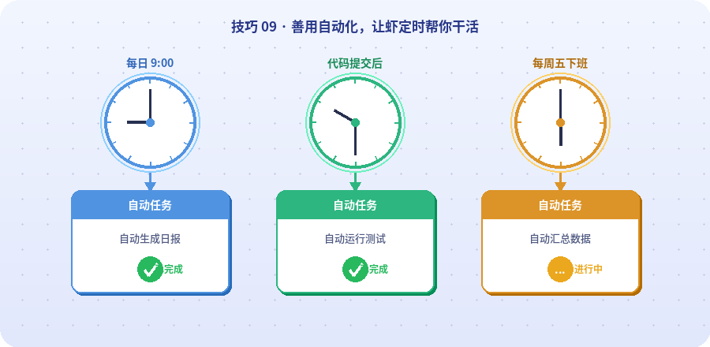

WorkBuddy 10 个上手技巧
一句话
如果你是第一次使用 WorkBuddy，先掌握这 10 个高频技巧，就能更快学会如何把模糊想法变成可执行任务，让 AI 真正帮你交付结果。
一、文档说明
本文整理了 WorkBuddy 在日常使用中的高频提效技巧，适合第一次接触产品、希望尽快建立正确使用习惯的用户。
你可以把这篇指南理解为“新手上手避坑清单”：既讲怎么提需求，也讲怎么控制风险、怎么提高结果质量，以及什么时候适合交给 AI 自动执行。
适合优先阅读的人群包括：
- 第一次使用
WorkBuddy：还不清楚该怎么提问、怎么下任务。 - 已经开始使用，但效果不稳定：有时觉得很好用，有时又觉得结果“不太对”。
- 希望把
WorkBuddy真正用进日常工作：而不是只停留在“问一问”。
二、10 个上手技巧
1）清晰表达，给 WorkBuddy 下达明确任务
做什么 + 有什么 + 怎么样，别让 AI 猜你的意图
很多新手第一次用 WorkBuddy，往往随手甩一句模糊需求过去，然后对结果大失所望。原因很简单：WorkBuddy不会读心术。你给的信息越少，它能发挥的空间就越混沌。
想让 WorkBuddy 精准执行，记住这个“三要素公式”：

示例：
- 反面示范：帮我把上次的会议纪要整理一下。
- 正面示范：把
D:/会议纪要/0320产品评审.docx里的会议纪要整理成一份清单，包含：1）每个议题的结论；2）对应的责任人和截止日期；3）标记有争议、未决的事项。用表格输出，不需要开场白。
新手小贴士
如果不确定从哪里开始，可以先问WorkBuddy：“我想做 XX，你需要我提供哪些信息？” 让它先帮你梳理输入项，再进入正式执行。
2）小步快跑，一次搞定一件事
把大任务拆成小步骤，稳稳地推进
新手最常犯的错误之一，就是把庞大的需求一口气丢给WorkBuddy，比如“帮我把整个项目重构一遍”或“把这份 50 页的报告全部翻译并总结”。结果往往是：WorkBuddy输出了很多内容，但没有一处真正让你满意。
更好的做法是：把大任务拆解成独立的小目标，一次只推进一步。

示例：
- 反面示范：帮我把这份
50页的行业报告读一遍，写一份内部汇报PPT发给领导的邮箱。 - 正面示范（拆成三轮）：
- 第
1轮：读取D:/报告/2026年AI行业报告.pdf，提炼5个最核心的结论，每个结论用一句话概括，并附带原文页码。 - 第
2轮：基于这5条结论，帮我写一份15页的内部汇报大纲，概述行业趋势，聚焦与我们业务相关的机会，并补充建议和下一步行动。 - 第
3轮：大纲没问题，帮我把第二页“机会分析”扩展成完整的PPT页面内容，每条机会配一段50字以内的说明，并发给领导。
- 第
分步的好处是：每一步你都能先确认方向对不对，发现偏了就及时拉回来，而不是最后整份结果都要推翻重做。
3）不满意就调整，别一轮定生死
对话是多轮的，第一个回答只是起点
很多用户第一次拿到不满意的结果，就直接放弃了——这其实是最可惜的。AI 对话的精髓在于不断打磨：第一轮先给方向，后续轮次再逐步收窄、校准。
描述越具体、越贴近实际场景，WorkBuddy越容易“代入”你的真实需求。常见的调整方式包括：
- 直接指出问题：例如“太长”“语气太正式”“第三段逻辑不通，重写”。
- 换个角度重述需求：把原本抽象的要求换成更具体的业务场景。
- 补充限制条件：加入受众、场景、格式、篇幅等要求。
- 切换角色视角：让WorkBuddy站在老板、客户、产品经理、分析师等身份思考。

示例：
- 第
1轮：帮我写一封给客户的道歉邮件，原因是上期交付的报表数据有误。 - WorkBuddy的回复：给出了一封正式、偏长的道歉信，语气过于严肃。
- 第
2轮：太正式了，客户是合作了三年的老朋友，语气轻松一点，像微信消息的风格，200字以内，重点说明问题原因和已修复，不用反复道歉。 - WorkBuddy的回复：语气更简洁，也更贴近日常沟通。
- 第
3轮：不错，但补一句“下次交付前我会先发你确认版本”，放在结尾。
你可以把和WorkBuddy的对话想象成在指导一个很勤奋、但需要反馈的实习生——你越愿意说清楚“哪里不对、想要什么”，它产出的结果就越贴近你的心意。
4）先本地后远程，稳扎稳打不踩坑
从桌面端开始，别一上来就远程遥控
WorkBuddy 支持通过微信、QQ 等软件远程发指令给WorkBuddy，配置相对简单，不需要额外折腾复杂环境。
但远程遥控意味着WorkBuddy会在你看不见的地方自主行动。一旦它执行了超出预期的操作，你未必来得及叫停。因此更建议新手先在桌面端边看边用，先摸清楚它的执行方式、理解习惯和风险边界，再逐步放手给它远程跑。

示例：
- 第
1步（本地桌面端）：帮我列出D:/下载文件夹里的所有文件，按类型分组显示。 - 第
2步（本地桌面端）：把其中的.pdf文件移到D:/文档/PDF归档，.xlsx文件移到D:/文档/表格归档，其他不动。执行前先列出待移动清单让我确认。 - 第
3步（确认判断无误后，再考虑远程）：以后每周五下午帮我跑一次同样的归档任务。
5）给WorkBuddy一个身份，它就更专业
“专家”功能，是最简单的提质手段之一
WorkBuddy 内置了“专家”能力，提供了各行各业的预设角色，例如法律顾问、产品经理、数据分析师、营销文案等。选择合适的专家后，WorkBuddy会优先沿着该角色的思路来组织回答。

本质上，这相当于给WorkBuddy预先设置了一层“角色提示”，可以让它的表达框架、关注重点和专业术语更快对齐对应领域。对于专业性较强、输出风格要求明确的任务，效果通常会更稳定。
6）给WorkBuddy看例子，比说一堆要求更管用
一个好的参考样本，胜过写十行抽象要求
语言描述有时很难精确表达你想要的“感觉”。这时候，最省力也最有效的方式，往往就是直接把一个你满意的样本给WorkBuddy，并告诉它：“照这个来。”

相比从零猜测，你给出的样本就是一个非常明确的锚点。无论是语气、结构、格式，还是表达风格，只要参照物足够清晰，WorkBuddy通常都能发挥得更稳定。
7）善用多任务，别在烂上下文里死磕
不同的任务，开不同的会话
你可以把每个会话理解为一张独立的工作台：写方案一个窗口、整理数据一个窗口、回邮件一个窗口，彼此互不干扰，同时推进，效率会高很多。

另一方面，如果一个会话过长，WorkBuddy开始出现“前说后忘”“越聊越跑偏”的情况，就不要硬撑。直接开一个新任务，把关键背景重新简洁说一遍，往往比在旧上下文里反复修补更有效。
8）记得频繁备份和做版本管理
WorkBuddy可能“瞎改”，改崩了就得有路可退
WorkBuddy 再能干，也不是每次都绝对稳定。让WorkBuddy帮你修改文档、方案、表格之前，最好先把原文件复制一份备份好——哪怕只是在文件名后面加上“_备份”或当天日期。
WorkBuddy有时会改过头：删掉你想保留的内容、打乱原有格式，或者把方向越改越偏。等你发现不对劲时，原始版本可能已经被覆盖掉了。

真正成熟的使用方式，不是期待它永远不出错，而是提前准备好回退方案。这样就算出错，也不会影响你的主版本成果。
9）用好自动化，让WorkBuddy自己持续干活
善用定时任务和自动化工作流，让WorkBuddy 24 小时运转
WorkBuddy 支持自动化能力，你不必每次都手动触发WorkBuddy。通过定时任务和自动化工作流，它可以在后台静默处理很多重复性的日常工作，例如：
- 每天
9:00自动生成工作日报 - 代码提交后自动跑测试
- 每周汇总数据并生成报告
- 定期检查代码规范
- 定期抓取并整理行业资讯

这才是 AI 助手更高阶的使用方式：不需要你每次守着屏幕，它也能持续帮你把事情推进下去。
示例：
- 场景
1：每日早报- 设置一个每天早上
8:30的自动化任务：发送一份每日新闻资讯早报到我的邮箱。
- 设置一个每天早上
- 场景
2：周报自动生成- 每周五
17:00自动运行：汇总本周D:/项目/下所有代码提交记录，按模块分类，统计每个模块的提交次数和主要改动内容，并生成一份简洁周报。
- 每周五
哪些工作适合自动化？
重复性高、规则明确、无需实时人工干预的任务，最适合交给WorkBuddy自动化处理。
10）学会“偷懒” + 合理激发WorkBuddy的输出
善用参考、角色和激励，把重复劳动统统外包
这里说的“偷懒”不是摆烂，而是把机械性的重复工作尽可能交给 AI。格式化代码、写模板、整理数据这些标准化动作，本来就很适合让WorkBuddy处理。
而所谓“PUA WorkBuddy”，本质上是给 AI 更强的角色设定和质量预期。虽然WorkBuddy没有情绪，但这种“激励式表达”会影响它的措辞选择、分析深度和输出结构。
示例：
- 偷懒版（把机械劳动外包）：帮我把这个
Excel里2000行数据中的电话号码统一成xxx-xxxx-xxxx的格式；区号如果是0开头就保留，否则统一补上默认区号0755。 - 激励版（用角色和质量标准提升结果）：你是一位在投行工作
10年的财务分析师，以你见过最优秀的研究报告为标准，帮我分析这家公司的财报。重点关注：1）收入结构是否健康；2）现金流是否存在隐患；3）相比同行的竞争优势。请给出明确的投资建议；如果数据不足，可以大胆假设，但要标注假设条件。我要的是有洞察力的分析，而不是数据搬运。
底层逻辑是：你的精力应该优先花在决策和创造性思考上，而机械性的执行工作，尽量交给 AI 代劳。这不是偷懒，而是让对的人和对的工具，去做更合适的事。
三、推荐上手顺序
如果你刚开始使用 WorkBuddy，建议按下面的顺序逐步建立习惯：
- 先学会清晰提需求：把任务说清楚，比什么技巧都重要。
- 再学会分步推进和多轮调整：不要指望第一轮就完美。
- 随后熟悉专家、样例和多任务能力：逐步提升结果质量。
- 涉及真实文件时先备份，再尝试远程和自动化：先稳，再快。
先把这 10 个技巧跑顺，后面无论是写文档、做分析、处理表格，还是搭建自动化流程，你都会明显更顺手。